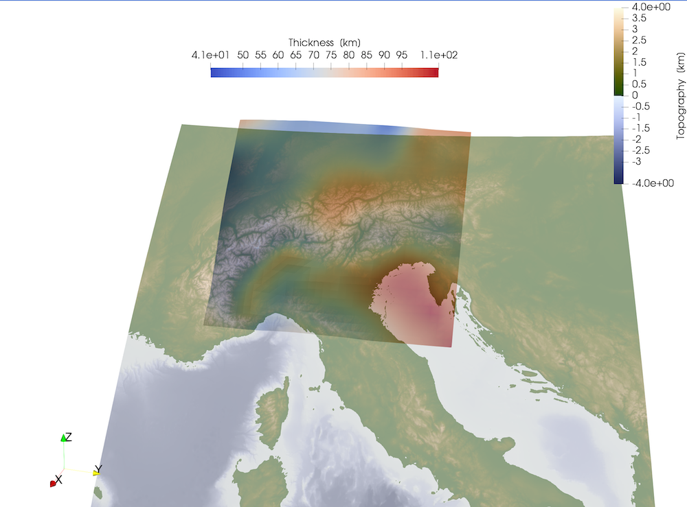

Read in UTM data
Goal
The aim of this tutorial is to show you how you can read in data that is given in UTM coordinates. The example we use is the 3D density model of the Alps derived by Spooner et al. (2010), which you can download following the link from
Spooner, Cameron; Scheck-Wenderoth, Magdalena; Götze, Hans-Jürgen; Ebbing, Jörg; Hetényi, György (2019): 3D ALPS: 3D Gravity Constrained Model of Density Distribution Across the Alpine Lithosphere. V. 2.0. GFZ Data Services. https://doi.org/10.5880/GFZ.4.5.2019.004
Steps
1. Download and import UTM data:
Download the data file 2019-004_Spooner_Lithospheric Mantle.txt from http://doi.org/10.5880/GFZ.4.5.2019.004 and make sure that you change to the directory using julia. If you open the data with a text editor, you'll see that it looks like:
# These data are freely available under the Creative Commons Attribution 4.0 International Licence (CC BY 4.0)
# when using the data please cite as:
# Spooner, Cameron; Scheck-Wenderoth, Magdalena; Götze, Hans-Jürgen; Ebbing, Jörg; Hetényi, György (2019): 3D Gravity Constrained Model of Density Distribution Across the Alpine Lithosphere. GFZ Data Services. http://doi.org/10.5880/GFZ.4.5.2019.004
X COORD (UTM Zone 32N) Y COORD (UTM Zone 32N) TOP (m.a.s.l) THICKNESS (m) DENSITY (Kg/m3)
286635 4898615 -24823.2533 70418.125 3305
286635 4918615 -25443.48901 69410.01563 3305
286635 4938615 -28025.24511 66402.49219 3305
286635 4958615 -32278.13135 61663.48438 3305
286635 4978615 -35885.5625 57459.14063 3305
286635 4998615 -37270.9812 55318.71094 3305
286635 5018615 -36134.30481 55497.16406 3305
286635 5038615 -34866.0697 55555.41406 3305So we have 5 columns with data values, and the data is separated by spaces. We can load that in julia as:
julia> using DelimitedFiles, GeophysicalModelGenerator
julia> data=readdlm("2019-004_Spooner_Lithospheric Mantle.txt",skipstart=4)
1023×5 Matrix{Float64}:
286635.0 4.89862e6 -24823.3 70418.1 3305.0
286635.0 4.91862e6 -25443.5 69410.0 3305.0
286635.0 4.93862e6 -28025.2 66402.5 3305.0
286635.0 4.95862e6 -32278.1 61663.5 3305.0
⋮
926635.0 5.45862e6 -35302.7 83215.6 3335.0
926635.0 5.47862e6 -34908.6 84203.0 3335.0
926635.0 5.49862e6 -34652.4 85398.3 3335.0We can read the numerical data from the file with:
julia> ew, ns, depth, thick, rho = data[:,1], data[:,2], data[:,3], data[:,4], data[:,5];2. Check & reshape vertical velocity
The data is initially available as 1D columns, which needs to be reshaped into 2D arrays. We first reshape it into 2D arrays (using reshape). Yet, if we later want to visualize a perturbed surface in paraview, we need to save this as a 3D array (with 1 as 3rd dimension).
julia> res = ( length(unique(ns)), length(unique(ew)), 1)
julia> EW = reshape(ew,res)
julia> NS = reshape(ns,res)
julia> Depth = reshape(depth,res)
julia> T = reshape(thick,res)
julia> Rho = reshape(rho,res)Next we can examine EW:
julia> EW
31×33×1 Array{Float64, 3}:
[:, :, 1] =
286635.0 306635.0 326635.0 346635.0 366635.0 386635.0 406635.0 … 826635.0 846635.0 866635.0 886635.0 906635.0 926635.0
286635.0 306635.0 326635.0 346635.0 366635.0 386635.0 406635.0 826635.0 846635.0 866635.0 886635.0 906635.0 926635.0
286635.0 306635.0 326635.0 346635.0 366635.0 386635.0 406635.0 826635.0 846635.0 866635.0 886635.0 906635.0 926635.0
286635.0 306635.0 326635.0 346635.0 366635.0 386635.0 406635.0 826635.0 846635.0 866635.0 886635.0 906635.0 926635.0
286635.0 306635.0 326635.0 346635.0 366635.0 386635.0 406635.0 826635.0 846635.0 866635.0 886635.0 906635.0 926635.0
⋮ ⋮ ⋱ ⋮
286635.0 306635.0 326635.0 346635.0 366635.0 386635.0 406635.0 826635.0 846635.0 866635.0 886635.0 906635.0 926635.0
286635.0 306635.0 326635.0 346635.0 366635.0 386635.0 406635.0 826635.0 846635.0 866635.0 886635.0 906635.0 926635.0
286635.0 306635.0 326635.0 346635.0 366635.0 386635.0 406635.0 826635.0 846635.0 866635.0 886635.0 906635.0 926635.0
286635.0 306635.0 326635.0 346635.0 366635.0 386635.0 406635.0 … 826635.0 846635.0 866635.0 886635.0 906635.0 926635.0So, on fact, the EW array varies in the 2nd dimension. It should, however, vary in the first dimension which is why we need to apply a permutation & switch the first and second dimensions:
julia> EW = permutedims(EW,[2 1 3])
julia> NS = permutedims(NS,[2 1 3])
julia> Depth = permutedims(Depth,[2 1 3])
julia> T = permutedims(T,[2 1 3])
julia> Rho = permutedims(Rho,[2 1 3]) 3. Create UTMData structure
Next we can add the data to the UTMData structure. In this, we use the information that the UTM zone was 32 North.
julia> Data_LM = UTMData(EW,NS,Depth,32, true, (Thickness=T/1e3*km, Density=Rho*kg/m^3 ))
UTMData
UTM zone : 32-32 North
size : (33, 31, 1)
EW ϵ [ 286635.0 : 926635.0]
NS ϵ [ 4.898615e6 : 5.498615e6]
depth ϵ [ -52579.56788 m : -20873.400850000003 m]
fields : (:Thickness, :Density)4. Saving and plotting in Paraview
We can transfer this into a GeoData structure as:
julia> Data_LM_lonlat = convert(GeoData,Data_LM)
GeoData
size : (33, 31, 1)
lon ϵ [ 6.046903388679526 : 14.892535147436673]
lat ϵ [ 44.11618022783332 : 49.64004892531006]
depth ϵ [ -52.57956788 km : -20.873400850000003 km]
fields: (:Thickness, :Density)and save it to Paraview in the usual way
julia> Write_Paraview(Data_LM_lonlat, "Data_LM_lonlat")Opening and plotting the vertical field gives: 